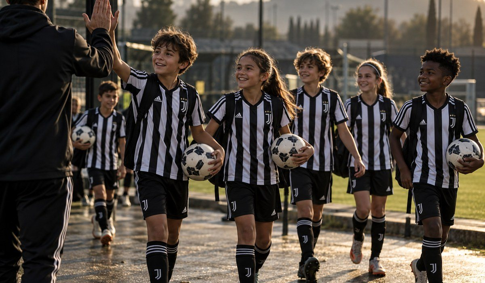

|
Hola Maria, Los entrenadores de Juventus Academy vienen desde Italia a Puerto Rico, con dos ID Camps: Mayagüez (16 y 17 de diciembre) y Bayamón (21 y 22 de diciembre). En el ID Camp de Juventus, tu hijo o hija va a: ✓ Entrenar con entrenadores oficiales de Juventus Academy
✓ Trabajar la técnica y la lectura del juego con la metodología de Juventus
✓ Mostrar su talento: los que más se destacan tienen la posibilidad de vivir una experiencia de Juventus en Italia |
Mayagüez
📅 Miércoles 16 y jueves 17 de diciembre · 5 a 8:30 PM
📍 Estadio Centroamericano, 25 Blvr. Guanajibo, Mayagüez
Bayamón
📅 Lunes 21 y martes 22 de diciembre · 5 a 8:30 PM
📍 Bayamón Soccer Complex 1, Calle Quintana, Bayamón
⚽ Niños y niñas de 6 a 16 años, jugadores y porteros |
Casi 300 familias de Puerto Rico ya entrenaron con Juventus en los últimos años. 
|